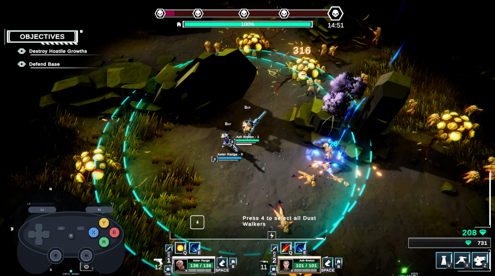

Normal
Bounded right-stick cursor
Right stick normally controls a bounded cursor around the active Dust Walker. This keeps aiming predictable and makes abilities much easier to target during hectic combat.
Unofficial Steam Input controller support for Dust Walkers
A controller layout built around how Dust Walkers actually plays, rather than trying to force it into a conventional twin-stick scheme. It uses a bounded right-stick cursor for predictable local aiming, an LT free-mouse mode when full pointer control is needed, direct access to abilities and core actions, and a control layout refined through full-demo completion and multiple play sessions.
Open Published Demo Layout
The published Steam Input v1 layout was built and validated against the Dust Walkers demo. I am currently testing and adapting the Controller Companion against the current Dust Walkers playtest.
A public playtest-compatible version is planned once that testing has reached a useful baseline.
Expect some instability: the playtest version of Dust Walkers is expected to change regularly, so bindings, interface behaviour or other assumptions used by the controller layout may change between game updates. Playtest support should therefore be considered provisional rather than as stable as the finished demo layout.
Demo v1 quick setup
Set Dust Walkers Input Method to WASD.
Enable Steam Input for the game.
Apply Dust Walkers Controller Companion — Steam Input v1.
Set Windows display scaling to 100%. Mouse Region behaved incorrectly at 175% scaling during testing.
Steam Input v1
The layout does not try to make Dust Walkers behave like a conventional twin-stick game. Instead, the right stick changes behaviour depending on what the game actually needs.
Normal
Right stick normally controls a bounded cursor around the active Dust Walker. This keeps aiming predictable and makes abilities much easier to target during hectic combat.
Hold LT
Hold LT when unrestricted mouse movement is needed. While LT is held, the right stick becomes a free mouse for menus, distant targeting, selling, and other pointer-heavy interactions.
Key idea
Free mouse control is optional rather than constant. Most combat can be handled with the bounded cursor, while LT temporarily gives full pointer freedom only when the game actually needs it.
Core gameplay
Movement, bounded right-stick aiming, dodge, interaction and abilities remain directly accessible during normal combat.
Design proof
The upgrade screen demonstrates why both cursor modes exist. Full mouse freedom is available when needed, but the bounded cursor can also turn the same interface into a simple, predictable three-way selection.
First interaction
Holding LT unlocks unrestricted pointer movement for precise menu interaction.
Second interaction
Without LT, the bounded cursor naturally behaves like a left / centre / right selector: hold the stick left or right, or leave it centred for the middle option.
Advanced pointer control
Some Dust Walkers interactions are genuinely mouse-heavy. Holding LT turns the right stick into a free mouse while the rest of the controller continues to handle clicking and menu actions.
Free mouse movement for inventory, menus and distant pointer interaction.
Left click and confirm while using the free pointer.
Right click for selling, targeting and other secondary mouse actions.
More gameplay clips
Additional footage showing the Steam Input layout in different parts of normal Dust Walkers play.
Full control map
The complete controller mapping used for the current Dust Walkers demo.
On smaller screens, swipe sideways to view all control-map columns.
| Controller input | Normal function | Hold LT function | Dust Walkers input |
|---|---|---|---|
| Left Stick | Move | Move | W / A / S / D |
| L3 | Melee Attack | Melee Attack | C |
| Right Stick | Bounded local cursor | Free mouse cursor | Mouse Region / Joystick Mouse |
| R3 | Teleport to Base | Right Click / Sell / Target | B / Right Mouse Click |
| A | Interact / Pick Up | Same | F |
| B | Construct Barrier | Same | Z |
| X | Construct Short-Range Turret | Same | V |
| Y | Construct Long-Range Turret | Same | X |
| LB | Upgrade / Level | Same | T |
| RB | Dodge | Same | Space |
| RT | Left Click / Confirm | Left Click / Confirm | Left Mouse Click |
| LT | Hold for alternate control layer | Held | Steam Input Mode Shift |
| D-pad Left | Projectile Ability | Select Walker 1 | Q / 1 |
| D-pad Up | Defense Ability | Select Walker 2 | E / 2 |
| D-pad Right | Utility Ability | Select Walker 3 | G / 3 |
| D-pad Down | Ultimate Ability | Select All / Swap Unit | R / 4 |
| View | Inventory | Same | Tab |
| Menu | Menu / Pause | Same | Escape |
| Share | Screenshot | Same | Steam Screenshot |
Known limitations
Steam Input removes a lot of control friction, but some limitations come from the specific Dust Walkers build being supported or from the game itself.
Steam Input's Mouse Region behaved incorrectly at 175% Windows scaling during testing. The bounded-cursor setup worked correctly at 100%. If the cursor is offset or trapped in part of the screen, check Windows scaling first.
The published Steam Input v1 layout was built and validated against the Dust Walkers demo. Compatibility with the current playtest is being tested separately, and playtest updates may change bindings, interface behaviour or other assumptions used by the layout.
The layout reduces the need to hunt for the cursor, but it cannot fix the game's underlying cursor visibility or combat-effect readability.
The layout exposes Walker selection cleanly, but managing multiple Walkers during fast or late enemy telegraphs remains a game-side challenge.
Some clicks appear to pass through screens that should feel modal. The layout does not attempt to compensate for that.
The current demo does not expose a manual reload key in its bindings.
Development story
Dust Walkers looked controller-friendly at first glance, but its actual control model mixes WASD movement, cursor-driven abilities, squad selection, building, interaction, and mouse-heavy UI.
Rather than remap everything at once, the project used a friction-first process: play until something felt awkward, solve that specific problem cleanly enough, then move on.
A bounded right-stick cursor replaced unrestricted mouse aiming for normal combat, making the cursor easier to keep track of.
LT temporarily unlocks full mouse movement for the situations where Dust Walkers genuinely needs unrestricted pointer control.
Abilities moved to the normal D-pad, while LT + D-pad handles individual Walker and squad selection.
Dodge moved to RB after playtesting showed that predictable cursor recovery mattered more than having dodge tied to the right stick.
The layout was revised through actual gameplay, including full-demo completion and multiple follow-up sessions.
Testing exposed a Windows display-scaling problem affecting Steam Input's Mouse Region, so 100% scaling became a documented compatibility requirement.
The goal was never to make Dust Walkers behave like a different game. It was to reduce the control friction enough that the game itself became the thing being played, rather than the input scheme.
Install and project status
The published Community Layout is the finished controller-support component for the Dust Walkers demo. Compatibility work for the current Dust Walkers playtest is now in progress, with a public playtest version planned once testing reaches a useful baseline. The optional Controller Glyph Overlay remains a separate future enhancement.
Steam Community Layout
Open the published controller layout directly in Steam.
Open Published Demo LayoutPrefer to find it inside Steam? Open the game's controller-layout browser, choose Community Layouts, and look for Dust Walkers Controller Companion — Steam Input v1.